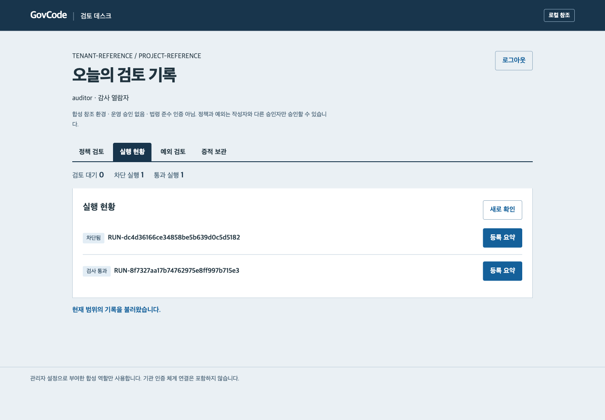

보안이 개발 과정에 들어간다는 뜻
프로그램을 만들거나 고칠 때, 정해 둔 보안 기준에 맞는지 함께 확인한다는 뜻입니다. 문제가 있으면 개발자가 고치고 다시 검사합니다. 검토 담당자는 그 결과를 보고 승인하며, 무엇을 확인했는지 기록을 남깁니다.
‘하네스’는 이 도구들과 절차를 연결해 함께 작동하게 하는 장치를 뜻합니다. 사람마다 따로 하던 점검과 검토를 이어 주는 역할입니다.
예를 들어, 민원 내용이 불필요한 기록에 남는다면?
다음은 가상 민원 자료로 확인한 첫 사례입니다. 여기서 ‘로그’는 프로그램이 작업하면서 남기는 기록입니다.
- 1
문제를 찾습니다
민원 원문을 일반 작업 기록에 남기는 코드가 있는지 점검합니다. 위험이 발견되면 해당 코드는 검사를 통과하지 못합니다.
- 2
개발자가 수정 결과를 확인합니다
민원 원문을 불필요하게 남기지 않도록 고친 코드를 다시 검사합니다. 민원 응답과 필요한 감사 기록이 유지되는지도 확인합니다.
- 3
검토할 자료를 남깁니다
어떤 기준으로 무엇을 확인했는지, 수정 전후 결과가 어땠는지 연결해 둡니다. 이를 확인 자료인 ‘증적’이라고 부릅니다.
이 사례는 프로그램 코드를 점검합니다. 접수 중인 실제 민원 요청을 막는 기능은 아닙니다.
지금은 어디까지 만들어졌나요?
현재 확인한 것
시험용 민원 프로그램의 문제 발견·수정 후 재점검, 담당자 승인, 확인 자료의 보관·복구와 한국어 관리 화면을 가상 자료로 확인했습니다.
새 프리뷰와 다음 단계
v0.10.0에는 사업 정보 관리, 규정 묶음의 적용 대상 판단과 설계 문서 초안 생성이 포함됐습니다. 자연어로 설명해 도구를 만들고 실행하는 전체 경험, 여러 분야의 실제 점검과 전체 완료 현황은 후속 범위입니다. 자세한 개발 상황
현재는 파일럿, 즉 시험하고 개선하는 단계입니다. 실제 기관에서의 시험 운영은 완료하지 않았습니다. 실제 업무에 쓰려면 개발·보안 담당자의 검토가 필요합니다.

내 역할에 맞게 참여하세요
- 사업·기획 담당자: 우리 업무에서 빠뜨리기 쉬운 점검과 남겨야 할 자료를 떠올려 주세요. 필요한 기능을 의견으로 남길 수 있습니다.
- 보안·검토 담당자: 어떤 기준과 확인 자료가 있어야 판단할 수 있는지 알려 주세요.
- 개발 담당자: 설치·실행 안내로 시험용 프로그램을 실행하고 결과를 확인하세요.
개발 경험이 없어도 설명이 어려웠던 부분이나 개선 아이디어를 알려 주시면 됩니다. 소개 자료를 동료에게 공유해 함께 검토해도 좋습니다.
낯선 말은 이렇게 이해하세요
- 보안이 내재화된 개발
- 프로그램을 만드는 과정에 보안 점검과 검토 절차가 포함된 개발 방식입니다.
- 정책
- 검사에 사용할 기준과 처리 규칙입니다. 예시로 만든 정책과 실제 기관의 승인된 기준은 구분합니다.
- 증적
- 무엇을 검사하고 검토했는지 보여 주는 결과와 기록입니다.
- 합성 자료
- 시험을 위해 만든 가상 자료입니다. 실제 민원인의 정보를 사용하지 않습니다.
- 규정 팩
- 한 분야의 기준과 할 일, 점검 항목을 묶은 구성입니다. 발행·버전 고정·적용 대상 판단은 v0.10.0 프리뷰에 포함됐습니다. 실제 요구 충족 검사는 별도 기능입니다.
- 오픈소스
- 정해진 라이선스 조건에 따라 소스 코드를 보고 사용·수정·공유할 수 있는 소프트웨어입니다.
자주 묻는 질문
직접 설치해야 의견을 낼 수 있나요?
설명이나 화면 예시를 읽어 본 의견만 남겨도 좋습니다. 직접 실행은 개발 담당자가 설치·실행 안내를 따라 진행할 수 있습니다.
비용이 드나요?
프로젝트 코드는 Apache-2.0 조건에 따라 라이선스 비용이나 로열티 없이 사용할 수 있습니다. 설치·인프라·운영 비용은 사용 환경에 따라 발생할 수 있습니다. 자세한 사용 조건을 확인하세요.
검사를 통과하면 모든 보안 요구를 충족하나요?
통과는 해당 검사 범위에서 확인한 결과입니다. 모든 보안 요구 충족이나 법적 준수 인증을 뜻하지 않습니다. 기관별 적용 판단과 운영 승인은 담당자가 검토해야 합니다.
AI가 알아서 수정하고 승인하나요?
AI는 설명과 수정안을 제안하는 역할입니다. 담당자의 승인과 별도 검사가 필요합니다. 현재 시험에서는 미리 준비한 AI 응답을 사용하며 실제 AI의 답변 품질은 아직 확인하지 않았습니다.